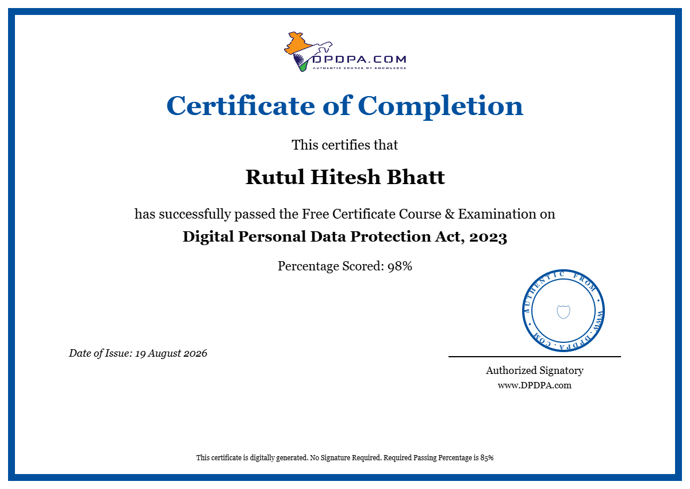

SECURITY OPERATIONS
Snort–Wazuh SOC Lab
Designing a lab environment for intrusion detection and log analysis to teach real SOC workflows to beginners.
SYSTEM STATUS: OPEN TO OPPORTUNITIES
Educator by training, cybersecurity learner by curiosity. I design accessible, evidence-based learning experiences and spend my free cycles inside SOC labs, log files, and detection rules.
ABOUT
I bring experience in teaching, mentoring, academic coordination, documentation, and curriculum design — with a particular pull toward cybersecurity education. I like the space where "how do I explain this clearly" meets "how does this actually get exploited."
Most of my recent hours go into building small SOC-style labs, breaking things safely, and writing up what I learn so someone else doesn't have to start from zero.
SELECTED PROJECTS
Designing a lab environment for intrusion detection and log analysis to teach real SOC workflows to beginners.
A reusable set of lesson templates that pair a security concept with a hands-on exercise, built for classroom or self-study use.
An evolving reference of Snort and Wazuh rules with plain-language notes on what each rule catches and why it matters.
CAPABILITIES
CERTIFICATES & BADGES
Sample credentials shown below — swap in your real certificates and images anytime. Cards without an image use a clean fallback design instead of an empty box.

DPDPA
Certificate related to the Digital Personal Data Protection Act and data protection practices.
AI Security Governance
Badge recognizing learning and achievement in AI security governance.
Linux Foundation
Command-line proficiency, file permissions, process management, and shell scripting basics.
Wazuh
Deploying Wazuh agents, building detection rules, and reading alerts inside a live SOC-style dashboard.
CompTIA
Studying toward core security competencies: threats, architecture, operations, and governance.
TryHackMe
Hands-on rooms covering triage, alert investigation, and the daily workflow of a Tier 1 analyst.
Association for Talent Development
Frameworks for turning dense technical material into structured, learner-first curriculum.
// To use your own certificates: replace the .cert-media content with an <img> tag, or keep the fallback badge style for credentials without artwork. Update data-cats to control filtering.
WORKSHOPS & CLASSROOM
A visual glimpse of workshops and classroom moments I've facilitated or joined. Click any photo for a closer look.
// Tip: compress your real photos for web (JPEG/WEBP) and write alt text that describes each moment for accessibility.
NOTES, DOCUMENTS & THOUGHTS
Things I'm writing, studying, and building — swap these placeholders for your own notes, PDFs, and write-ups anytime.
Quick working notes on the alert rules that caught repeated failed logins during my lab testing.
Read noteA one-page reference I built while studying — triage steps, common log locations, and analyst vocabulary.
View sheetA short reflection on how explaining a vulnerability to someone else forces you to actually understand it.
Read thoughtWalkthrough of the hardware, VMs, and network setup I used to build a small detection lab at home.
Read postDocumentation covering rule syntax, common options, and a handful of examples I keep coming back to.
Open PDFA running list of free courses, rooms, and reading I've personally found worth the time.
View listA small script that flags suspicious patterns in auth logs — built to learn, not to replace a real SIEM.
View on GitHubCURRENT DIRECTION
Interested in exploring the intersection of pedagogy and practical security skills — designing learning that matters.
CONTACT
Open to conversations about teaching, security, or where the two overlap.